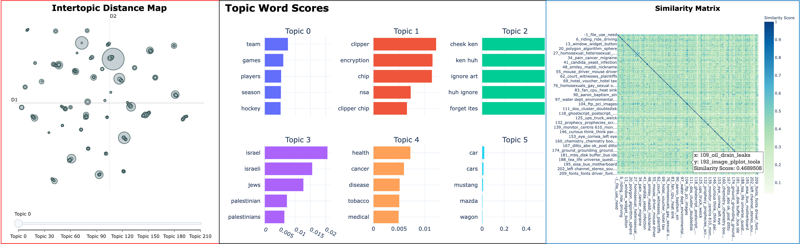

Fall Quarter 2022 Text Analysis and Machine Learning (TAML) Bootcamp
Contents
Fall Quarter 2022 Text Analysis and Machine Learning (TAML) Bootcamp#

Do you want to learn Python but don’t know how to get started? Attend the Fall Quarter 2022 Text Analysis and Machine Learning Bootcamp!
This is relaxed, low-stakes environments for beginners who have little or no experience programming in Python and want to learn it for purposes of computational text analysis and machine learning.
Click here to view details and register. Please register for each session separately.#
Monday, September 19 - Learn the software needed to program Python on September 19 along with its basic syntax for importing, wrangling, and visualizing data.
AM session: 10AM-12PM
PM session: 1PM-3PM
Wednesday, September 21 - - Understand basic principles for working with text data and machine learning.
AM session: 10AM-12PM
PM session: 1PM-3PM
Friday September 23 - Deep dive into the BERTopic algorithm for topic modeling text.
AM session: 10AM-12PM
PM session: 1PM-3PM
Software and Services for Data Science (SSDS)#
Hosted by the Text Analysis and Machine Learning Working Group (TAML) at Software and Serivces for Data Science (SSDS) at the Stanford University Cecil H. Green Library. Visit us at https://ssds.stanford.edu